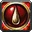
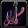

Métiers pas à pas 1-300
Les 12 métiers de WoW Forever, de 1 à 300, étape par étape : où apprendre chaque rang, quels composants acheter ou récolter et quelles recettes fabriquer pour monter au plus vite. Choisis ta faction en haut de chaque guide pour ne voir que tes étapes.
 Alchimie1 à 300 · 68 étapes
Alchimie1 à 300 · 68 étapes Forge1 à 300 · 67 étapes
Forge1 à 300 · 67 étapes Enchantement1 à 300 · 37 étapes
Enchantement1 à 300 · 37 étapes Ingénierie1 à 300 · 60 étapes
Ingénierie1 à 300 · 60 étapes Travail du cuir1 à 300 · 60 étapes
Travail du cuir1 à 300 · 60 étapes Couture1 à 300 · 42 étapes
Couture1 à 300 · 42 étapes Herboristerie1 à 300 · 27 étapes
Herboristerie1 à 300 · 27 étapes Minage1 à 300 · 28 étapes
Minage1 à 300 · 28 étapes Dépeçage1 à 300 · 27 étapesCuisine1 à 300 · 74 étapes
Dépeçage1 à 300 · 27 étapesCuisine1 à 300 · 74 étapes
Secourisme1 à 300 · 28 étapes
Pêche1 à 300 · 27 étapesLes nouveautés des métiers dans Forever (camping, Faveur marchande, objets de camp) sont expliquées sur la page Métiers et la page Réputations.
Route et textes : Polestar, addon communautaire gratuit (code source sur GitHub), traduction française de ses contributeurs. Ces pages reprennent ses guides et sont donc, comme eux, sous licence GNU GPL v3. Noms des quêtes, PNJ et objets : données du jeu © Blizzard Entertainment. Routes de la bêta, susceptibles d'évoluer.